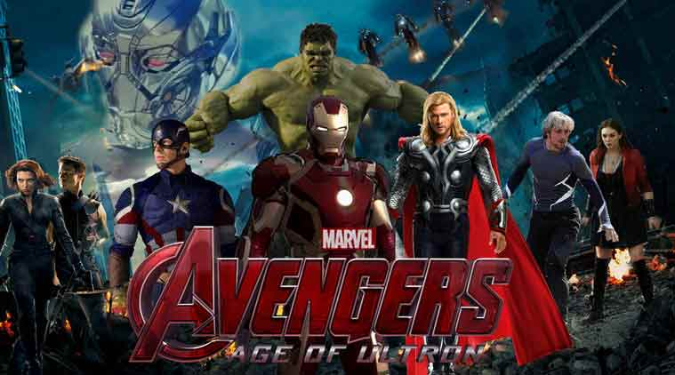

Superhero
From Wikipedia, the free encyclopedia
For other uses, see Superhero (disambiguation).
A superhero (sometimes rendered super-hero or super hero) is a type of heroic stock character who possesses supernatural or superhuman powers and who is dedicated to fighting crime, protecting the public, and usually battling supervillains. A female superhero is sometimes called a superheroine (also rendered super-heroine or super heroine), although the word superhero is commonly used for females also. Superhero fiction is the genre of fiction that is centered on such characters, especially in American comic books since the 1930s.

Contents
-
History
-
Early history
-
1940s
-
Common traits
History
Early story
The word 'superhero' dates to at least 1917.[6] Antecedents of the archetype include such folkloric heroes as Robin Hood, who adventured in distinctive clothing.[7] The 1903 play The Scarlet Pimpernel and its spinoffs popularized the idea of a masked avenger and the superhero trope of a secret identity....
1940
During the 1940s there were many superheroes: The Flash, Green Lantern and Blue Beetle debuted in this era. This era saw the debut of first known female superhero, writer-artist Fletcher Hanks's character Fantomah,...
Common traits
Many superhero characters display the following traits:
-
Extraordinary powers or abilities. Superhero powers vary widely; superhuman strength, the ability to fly, enhanced senses, and the projection of energy bolts are all common. Some characters like Batman, Mockingbird, the Phantom and the Question possess
no superhuman powers but have mastered skills...
- A strong moral code, including a willingness to risk one's own safety in the service of good without expectation of reward. Such a code often includes a refusal or strong reluctance to kill or wield lethal weapons.
- A motivation, such as a sense of responsibility and guilt (e.g. Spider-Man), an altruistic calling (e.g. Wonder Woman), a childhood trauma or personal vendetta against criminals (e.g. Batman), or a strong belief in justice and humanitarian service (e.g.
Superman).
| name |
power |
age |
| superman |
eye |
20 |
| thor |
hammer |
30 |
|
Sum
|
50 |

|
This article has multiple issues. Please help improve it or discuss these issues on the talk page. (Learn how and when to remove these template messages)
|